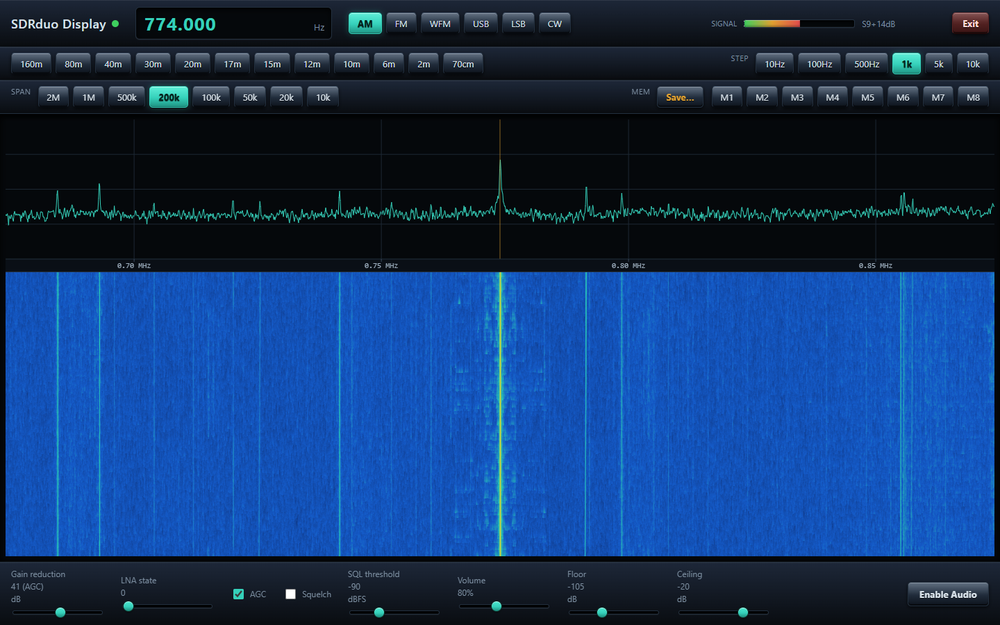
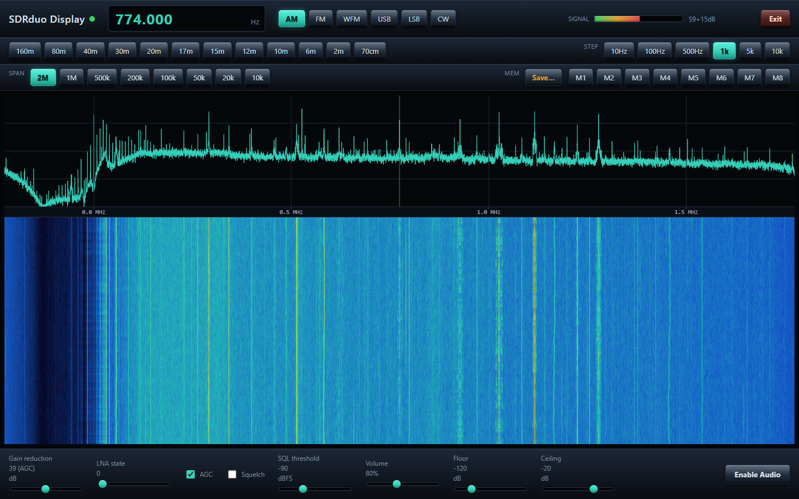

SDRDUO DISPLAY
A free receiver for the SDRplay RSPduo that runs in a browser tab. Your Windows PC does the signal processing and serves the spectrum, waterfall, audio and controls as one web page.

A real capture: an AM broadcast station on 774 kHz with its sidebands, 200 kHz span.
What it does
Everything lives in one browser page. Close the tab and the receiver keeps running; reopen it and carry on.
RSPduo --USB--> SDRplay API --DSP (Python)--> local web server --> browser tab
Panadapter and waterfall
Up to 2 MHz of spectrum with a scrolling waterfall. Click or scroll to tune. Span from 2 MHz down to 10 kHz.
Six modes
AM, narrow FM, broadcast WFM, USB, LSB and CW, with an audio AGC that keeps the level steady across modes.
Gain your way
Hardware AGC or manual gain reduction and LNA state. The readout shows what the tuner is really running.
Quick tuning
Band buttons from 160 m to 70 cm, an on-screen frequency keypad, tuning steps from 10 Hz to 10 kHz and 8 memories.
Squelch and S-meter
Adjustable squelch, an S-unit meter and an ADC overload warning.
Clean shutdown
The Exit button releases the RSPduo properly, so the next start finds it straight away.

The same band at the full 2 MHz span.
Not yet: the RSPduo's second tuner, digital-mode decoding, recording, and remembering the last frequency between runs.
What you need
An SDRplay RSPduo
Connected to the PC by USB. Other RSP models are not supported.
The SDRplay API
Version 3.15 or newer, from sdrplay.com/software. It is SDRplay's own software and is not included here.
Python 3.10+
The installer finds it, or offers to install it through winget.
A modern browser
Chrome, Edge or Firefox on the same PC.
Get started
- Install the SDRplay API from sdrplay.com/software and plug in the RSPduo.
- Download
SDRduoDisplay-0.20-windows.zipfrom the latest release and unzip it. - Run
setup.exe. It is not code-signed, so Windows may say "Windows protected your PC". Click More info, then Run anyway. It installs to%LOCALAPPDATA%\SDRduoDisplaywithout administrator rights and downloads the Python packages it needs. - Start SDRduo Display from the Desktop or Start Menu shortcut. A browser window opens at
http://127.0.0.1:8080. Opening the radio can take up to a minute the first time. - Click Enable Audio (browsers will not play sound until you click), and use Exit when you are done.
Prefer the source? Clone the repository and run start_sdrduo.bat.
The User Guide explains every control.
Privacy
SDRduo Display has no telemetry, no analytics and no internet service behind it. The author receives nothing from your copy.
This computer only
The built-in web server listens on 127.0.0.1 port 8080, so other devices cannot reach it unless you change that yourself. It has no login.
Quiet on the network
While running, its only internet request is an optional check of GitHub for a newer release (tick box in the top bar turns it off). The installer downloads Python packages from PyPI.
Receive only
It never transmits. Settings and memories stay in your own browser.
Disclaimer
Please read this before using SDRduo Display. The full text is in DISCLAIMER.md.
No warranty
SDRduo Display is a free hobby project provided "as is", without warranty of any kind, express or implied, under the MIT License. You use it entirely at your own risk.
Limitation of liability
To the maximum extent permitted by law, the author is not liable for any loss or damage of any kind arising from the use of, or inability to use, SDRduo Display or its installer, including damage to equipment, data loss, injury or regulatory infringements.
Not a measuring instrument, not for safety use
The S-meter, levels and frequency readouts are uncalibrated. Do not rely on the program for measurements or to monitor emergency, aviation, marine or other safety-related communications.
Not legal advice
What you may lawfully receive differs between countries. The band buttons are an approximation of the Australian amateur bands. You are solely responsible for complying with your own laws and licence conditions.
Not affiliated with SDRplay
This is an independent project, not affiliated with, endorsed by or supported by SDRplay Limited. "SDRplay" and "RSPduo" are trademarks of their owner. The SDRplay API is SDRplay's own software under its own terms.
Unsigned installer
The installer is a compiled PowerShell script and is not code-signed. Windows SmartScreen or antivirus software may warn about it. Only download it from this project's GitHub page; its source is in the repository.